Shattered Charms: Through The Veil
A third-person dark fantasy Action RPG vertical slice built solo in Unreal Engine 5. Combines a Dual-Slot Charm Fusion system, Jewel-gated weapon purification, and a multi-phase Behavior Tree boss fight.
★ Key Design & Technical Highlights
- Built a data-driven Charm Fusion system (
DT_CharmsSystem+BPC_PlayerCharmSystem) so UI drag-and-drop never touches stat math directly. - Replaced hard-cast Blueprint chains with Blueprint Interfaces (
BPI_Damage,BPI_Interact) across combat, shrines, chests, and NPCs. - Designed Veyla's Boss AI (
BT_Boss) where hitting her mid-heal cancels the channel on the exact frame of impact and locks her HP where it stopped. - Tuned a 20 to 30 minute Hub-and-Spoke RPG economy where players farm Jewels to afford two Shrine purifications (80 & 130 Jewels) before breaking the boss barrier.
Game Design & Combat Systems
01. Overview & Design Pillars
Weeks after an asteroid event called The Shattering, creatures from a corrupted dimension tear through a quiet farming village and abduct the protagonist's sister. Armed with only a rusted family blade, you explore corrupted spokes, fuse forbidden Charms, and purify your sword at ancient Shrines to face Veyla at the Impact Crater.
Two-Slot Loadout Trade-Offs
Only two Charm slots exist (one Normal, one Fused). You can't equip everything at once, so you have to choose between farming Jewels, tanking hits, or burst damage.
Shrine-Gated Progression
A dull Level 0 sword won't scratch the final boss. You need to scavenge Jewels to fund two Shrine rituals before the crater barrier opens.
No Minimap Clutter
Instead of floating quest markers, inner monologue ("Self-Talk"), short NPC hints, and warm-vs-cold lighting pull players naturally toward objectives.
Enemies That Teach Mechanics
Fights scale from basic swarmers to dodge-check Warriors, self-healing Elites, and a boss that teleports away to heal if you give her breathing room.
02. Combat & Core Gameplay Loop
Combat centers on a snappy 3-hit melee combo (5.0 base damage per hit via a 25-unit blade trace), a directional Dodge Roll with 0.1s of invulnerability frames, and Middle-Mouse Target Lock-On.
Neither HP (100) nor Mana (100) regenerates on its own, so you have to stay aggressive and break chests for physical drops. Stamina (100) drains at 5.0/sec while sprinting (480 cm/s vs. 400 cm/s walk) and refills at 25.0/sec when pacing swings.

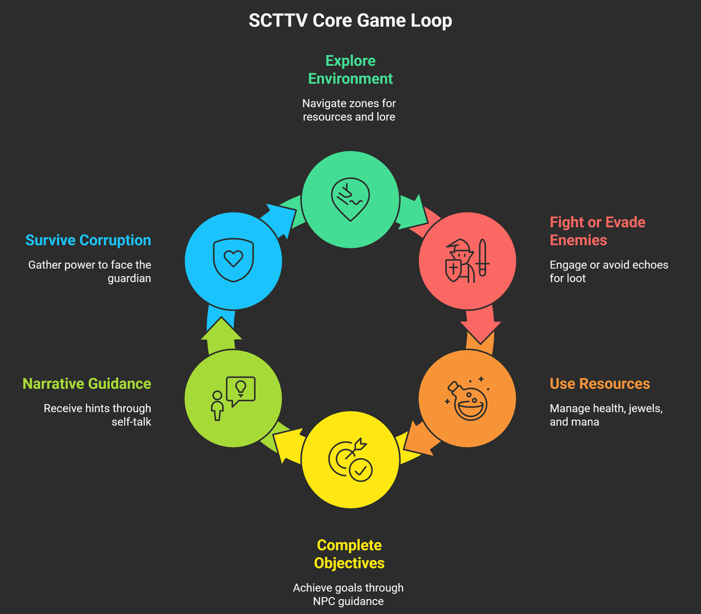
03. Dual-Slot Charm Fusion System
Instead of a bloated skill tree, progression runs on 4 base Charms (2 Passive, 2 Active) equipped in a drag-and-drop menu ([Tab]). Collecting matching Passive + Active pairs unlocks 2 Fused Charms for the dedicated Fused Slot.
| Charm Name | Slot | Effect & Multiplier | Unlock Source | Mana | Duration |
|---|---|---|---|---|---|
| Veil Harmony | Passive | Sets DamageReductionMultiplier to 0.35 (65% damage mitigation) |
Priest Temple Quest | 0 | Passive |
| Shatter Pulse | Passive | Sets ResourceDropRateMultiplier to 1.75 (+75% Jewel & loot drops) |
Farmer Ambush Clear | 0 | Passive |
| Veil Burst | Active | Fires a 300-unit AoE shockwave dealing 20.0 base damage | Temple Guardian Gift | 10 | Instant |
| Shatter Strike | Active | Sets bNextMeleeIsBuffed = true (+50% damage on next swing) |
Arena Guardian Trial | 15 | 15s |
| Veil Shatter Burst | Fused | 1.75x Drop Rate + 300-unit / 20.0 dmg AoE shockwave | Own Pulse + Burst | 25 | Instant |
| Veil Shard Strike | Fused | 65% Damage Reduction + +50% next melee damage buff | Own Harmony + Strike | 25 | 15s |

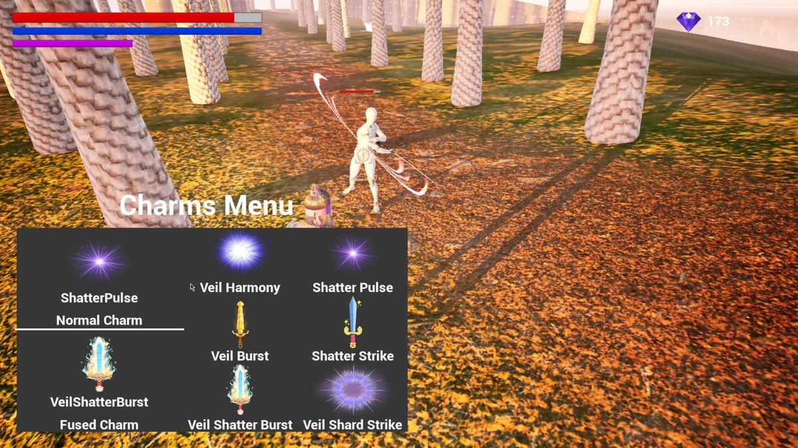
04. Economy & Shrine Purification Gates
Enemies drop 3 to 20 Jewels depending on tier, giving players a clear reason to equip Shatter Pulse and explore optional spokes before facing the final boss:
- First Shrine Ritual (80 Jewels): At the Priest Temple Shrine. Upgrades
SwordUpgradeLevelto 1 and unlocks Fused Charm powers. - Second Shrine Ritual (130 Jewels): At the Hidden Cave Shrine. Upgrades
SwordUpgradeLevelto 2, igniting the blade and opening the Boss Barrier at the Impact Crater.

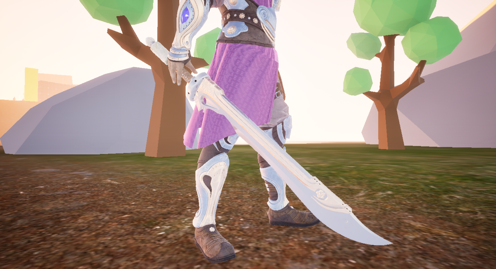
05. Enemy Escalation & Boss Design
All enemies share a 3000-unit Sight Radius and 90° vision cone while introducing a clear combat check. Level 3 Elites even self-heal, quietly teaching the player how to interrupt healing before they face Veyla.
| Archetype | Max HP | Speed | Melee | Ranged | Jewel / Heal / Mana | Combat Role |
|---|---|---|---|---|---|---|
| Pawn 1 (Varmint) | 14.5 | 375 cm/s | 7.5 | - | 5 / 15 / 0 | Fast swarmer teaching basic 3-hit spacing |
| Pawn 2 (Warrior) | 18.5 - 56 | 375 cm/s | 3.5 - 11 | - | 3 / 10-20 / 10-15 | Armored bruiser punishing button-mashing; teaches Dodge |
| Pawn 3 (Elite) | 69 | 425 cm/s | 16 | - | 20 / 20 / 20 | Spoke mini-boss; foreshadows Boss healing |
| Veyla (Final Boss) | 100 | 500 cm/s | 16 | 30 | 500 / 100 / 100 | Multi-phase duel testing Dodge, Melee, and Fused Charms |
30-damage Cosmic Rays. Below 60 HP, she spends 20 Mana to teleport across the arena and channel a 5-second heal. If you dash in and hit her mid-channel, her health locks right where it was when interrupted.

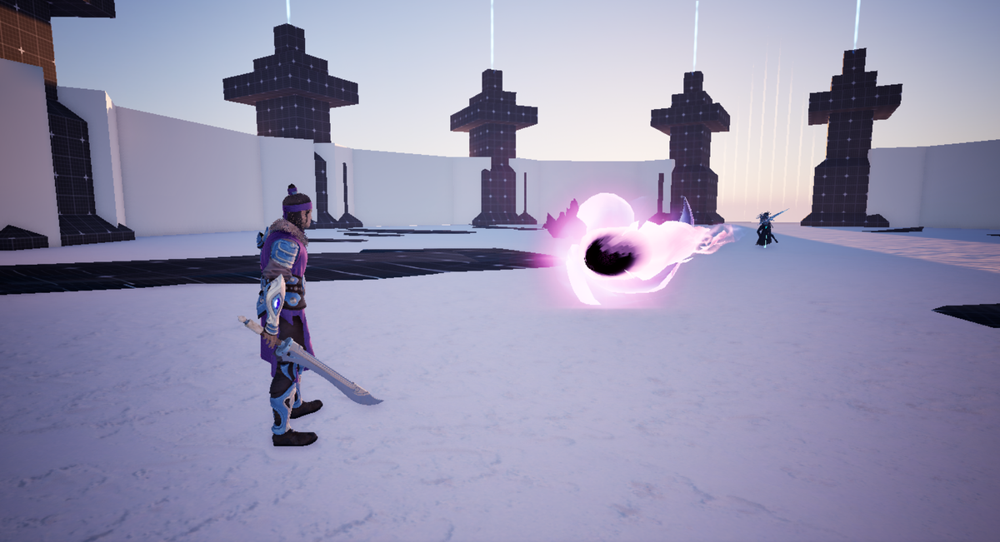
06. Hub-and-Spoke Encounter Pacing
The 20 to 30 minute slice flows as a Hub-and-Spoke valley that alternates combat spikes with safe breathing room:
- Forgotten Woods (Onboarding): Starts in your burned home. A fallen log teaches jump, a Fake Shrine decoy hides a nearby Jewel chest, and a lone Varmint introduces sword timing.
- The Market (Safe Hub): Warm orange lighting and fortified walls give players relief, vendor context, and branching Town Elder dialogue.
- Priest Temple, Cursed Cave & Blighted Farm (Spokes): Cold purple and yellow lighting signal Veil corruption. Players tackle spokes in any order to collect Charms and Jewels.
- The Impact Crater (Boss Arena): Wide, open snowy basin so Veyla's teleports and Cosmic Rays stay readable from anywhere.


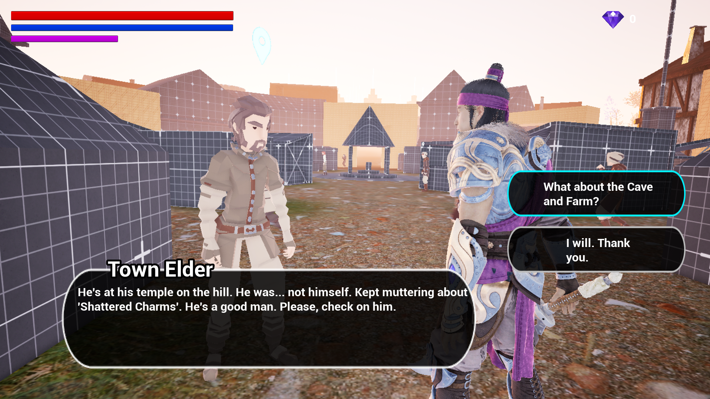
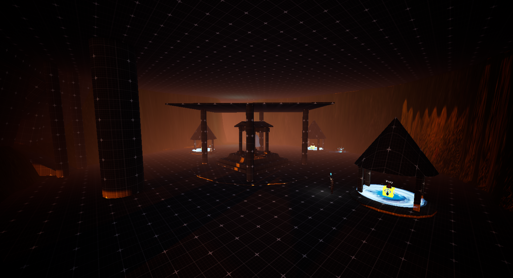
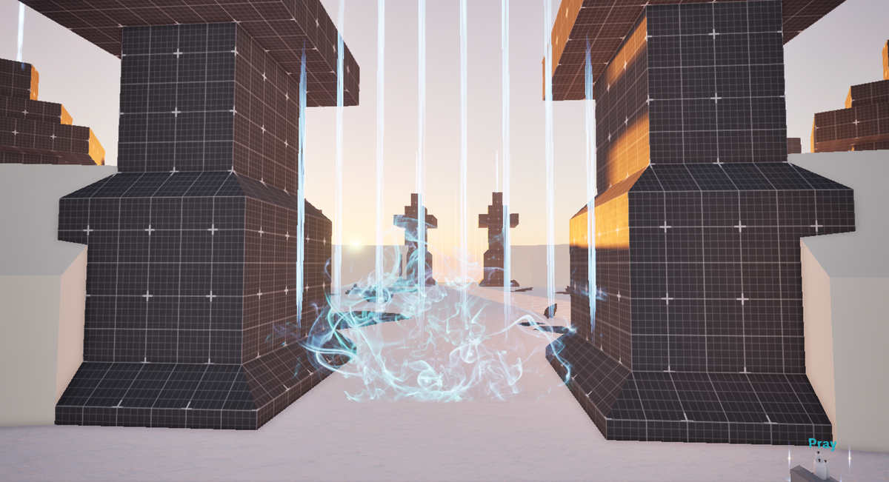
Technical Design & Architecture
07. Technical Design: Decoupled Data & Interfaces
Action RPGs turn into spaghetti fast when UI menus, combat math, and world triggers all talk directly to the Player Blueprint. I split everything into three clean layers so equipping a charm updates your combat stats automatically without messy cross-references:
- Zero Hard Casting:
BPI_Damage(BeginSwordTrace,EndSwordTrace,Die) andBPI_Interact(InteractWithChest,InteractWithShrineLvl1,InteractWithShrineLvl2) letBP_Playertalk to enemies, chests, and shrines without knowing their exact Blueprint classes. - Data-Driven Tuning: Mana costs, durations, and slot types live inside
DT_CharmsSystem(backed by enumsE_CharmID_NewandE_CharmSlotType) so balance tweaks never require rewiring Blueprint nodes.
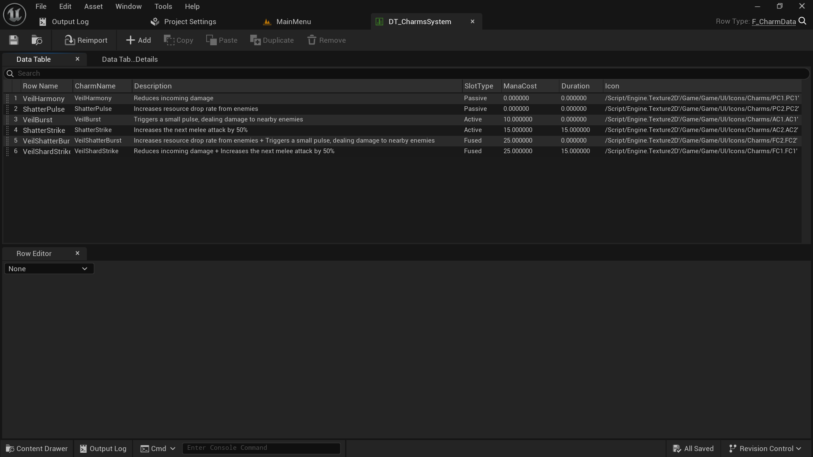
F_CharmData): Centralizes slot types, Mana costs, durations, and UI icons for all 6 charms.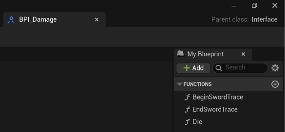
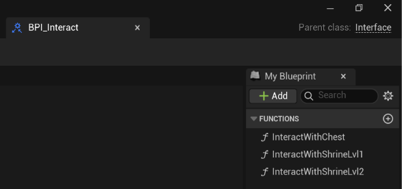
08. Modular Charm Component & Stat Math
All charm state and stat math live inside BPC_PlayerCharmSystem on BP_Player. One classic bug in equip systems is multiplier stacking or stale values when players swap gear back and forth quickly.
UpdatePassiveEffects): Whenever a charm is equipped or swapped, UpdatePassiveEffects resets DamageReductionMultiplier and ResourceDropRateMultiplier back to 1.0 first, then reads both active slots fresh. Swapping charms 50 times in a row can never leak or stack stats.
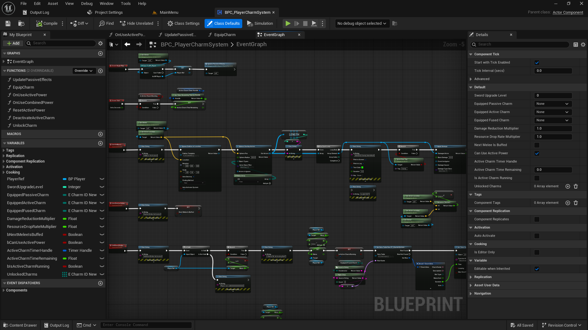
Interactive Graph 1: Stat Recalculation (UpdatePassiveEffects)
Resets baseline multipliers to 1.0 before reading Normal and Fused slot IDs, preventing stat drift during fast loadout swaps.
Interactive Graph 2: Data-Driven Slot Routing (EquipCharm)
Looks up DT_CharmsSystem by Row Name, breaks F_CharmData, and switches on E_CharmSlotType to route Passive/Active charms into the Normal Slot and Fused charms into the Fused Slot.
Interactive Graph 3: Gated Fused Ability Execution (OnUseCombinedPower)
Checks two gates before firing Fused powers: first verifying SwordUpgradeLevel >= 1, then checking Mana >= 25 before deducting Mana and triggering the ability.
09. Combat Engineering & Resource Pipeline
AnimNotify Sword Trace Windows
Animation notifies fire BeginSwordTrace and EndSwordTrace via BPI_Damage, caching hit actors per swing so one blade arc never hits the same enemy twice.
0.1s Dodge Roll I-Frames
Dodge Roll toggles an invulnerability flag for 0.1s, ignoring incoming damage during peak roll frames without disabling world collision.
Single-Swing Buff Consumption
Shatter Strike sets bNextMeleeIsBuffed = true for 15s. On the next landed hit, damage multiplies by 1.5x and clears the flag right away.
Shrine Upgrade Checks
InteractWithShrineLvl1 and Lvl2 verify Jewel counts (80 / 130), deduct currency, increment SwordUpgradeLevel, swap blade shaders, and unlock the Boss Barrier.
10. Boss AI Behavior Tree & Shared Enemies
All three regular enemy tiers (Varmint, Warrior, and Elite) inherit from one parent class (BP_AI_Pawn) sharing a single Behavior Tree (BT_Pawn) and Blackboard (BD_AI_Pawn).
Veyla expands this setup into a dedicated Behavior Tree (BT_Boss) driven by a perception service (BTS_UpdateBossSenses) updating distance, HP percentage, and Mana every tick interval.
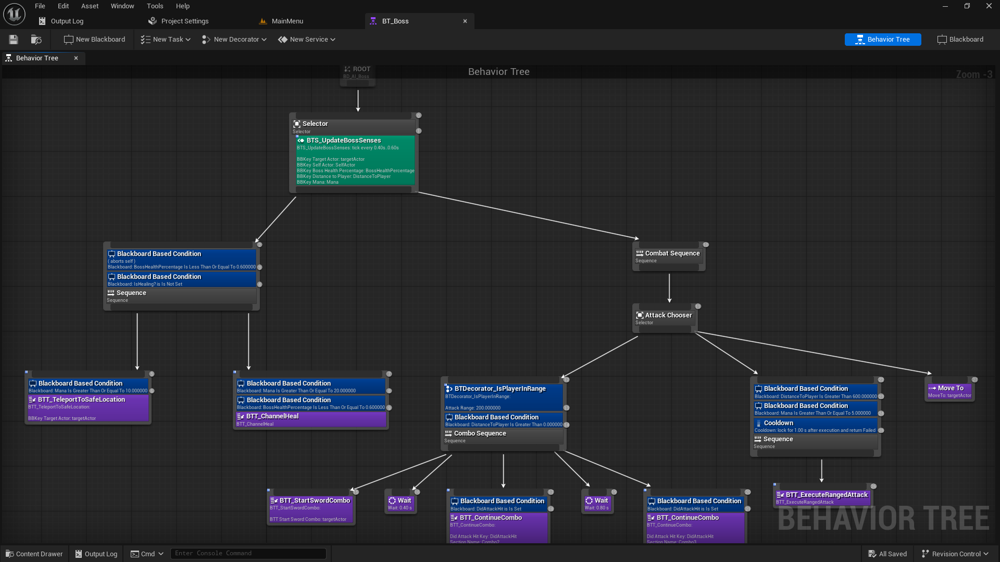
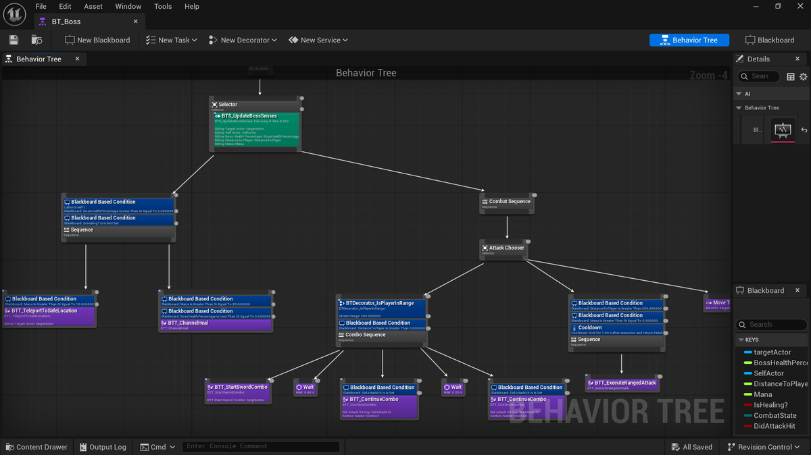
Interactive Graph 4: Boss Heal Channel & Interrupt Task (BTT_ChannelHeal)
Custom Behavior Tree Task handling Veyla's 5-second heal loop, Mana deduction, and instant abort cleanup when IsHealing? flips false on player impact.
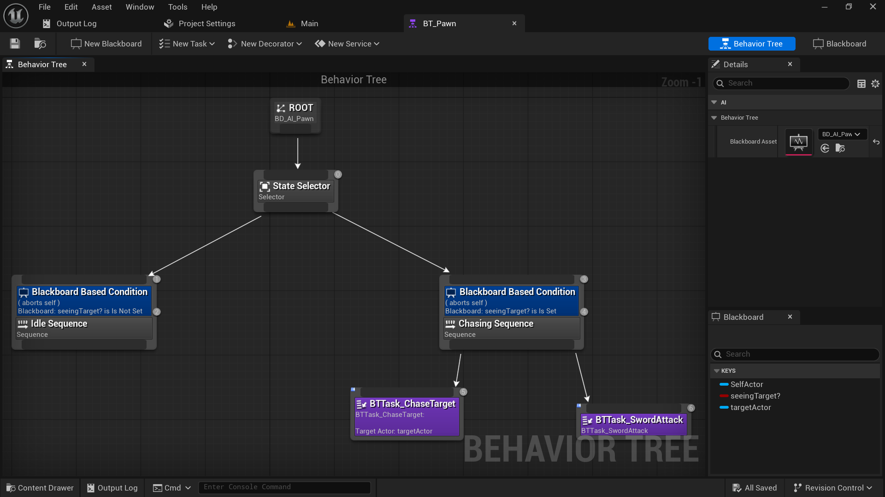
BP_AI_Pawn & BT_Pawn): Varmints, Warriors, and Elites all run on one shared Behavior Tree and Blackboard.11. Early Paper Prototypes & Notebook Sketches
Before opening Unreal Engine 5, I sketched the valley layout, 5-zone progression flow, Jewel upgrade thresholds (80 & 130), and Boss AI range/state rules on paper:
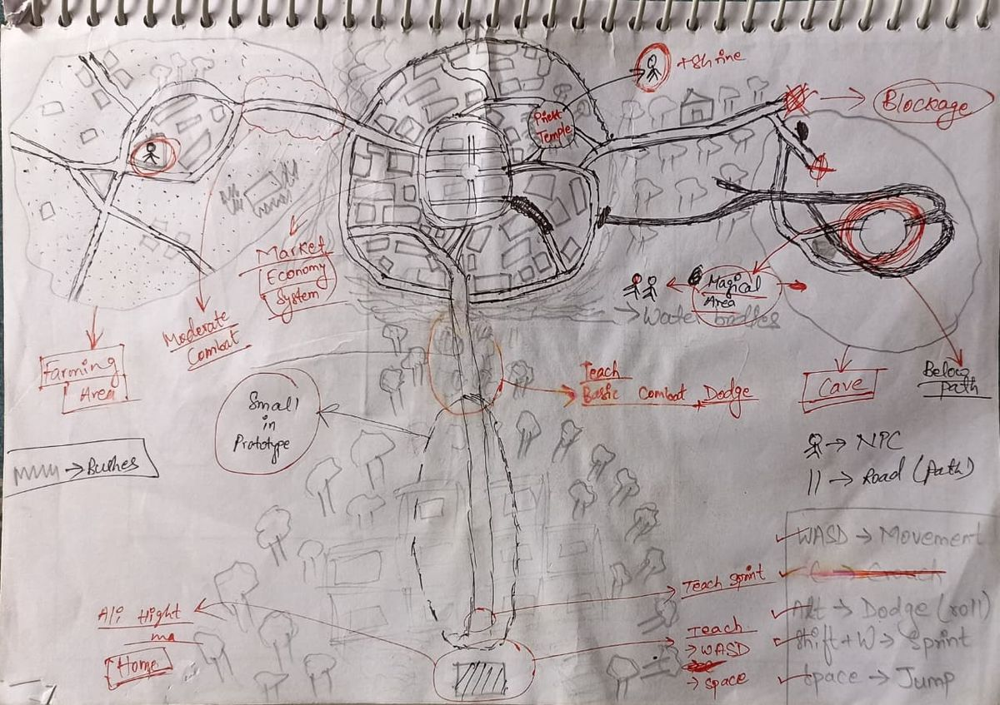
WASD, Shift+W, Alt Dodge), Market economy hub, Farming Area, and Cave path.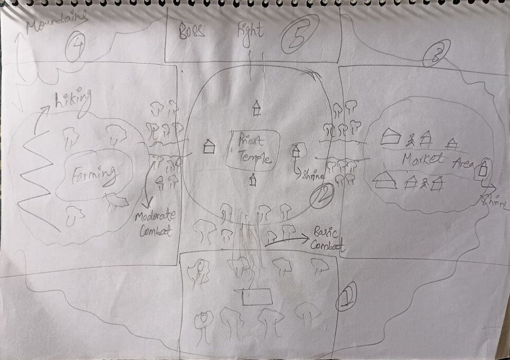


Root → State Selector → Idle / Chasing Sequence) and Boss ability notes (Cosmic Ray, Healing, Teleport).
Normal Attack, Healing region, Cosmic Ray for 10 Mana) and the ≤ 60 HP teleport-heal interrupt rule.